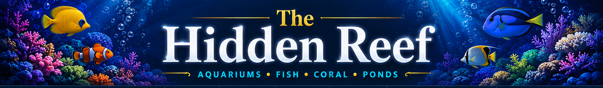
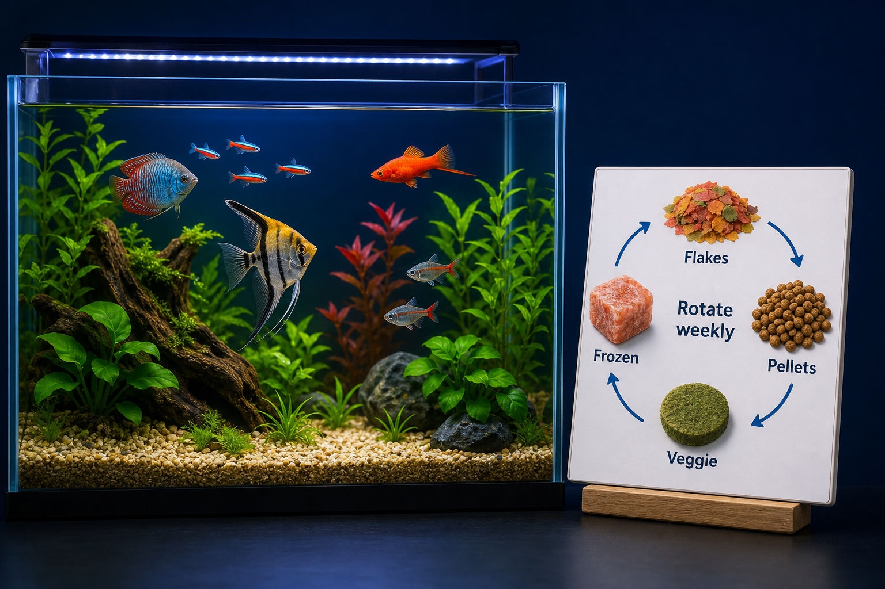

Flakes
Useful for many community fish that feed near the surface or mid-water.
- Easy to size by crushing
- Can create dust if overhandled
- Best in tiny, watched portions

The Hidden ReefAquariums · Fish · Coral · PondsA good rotation gives fish variety without turning every feeding into a buffet. Pick a dependable staple, add targeted foods for the livestock you keep, and use richer foods as planned supplements instead of extra meals.

Food rotation works best when each food has a job. Start with the livestock, then choose foods that solve actual feeding needs.
Useful for many community fish that feed near the surface or mid-water.
Consistent portions and nutrition, especially when fish accept the pellet size.
Helpful for picky fish and variety, but easy to overuse in small tanks.
Important for herbivores, algae grazers, plecos, some cichlids, and many reef fish.
Use fry foods, coral foods, wafers, medicated foods, or pond diets when the animal calls for it.
This is not a prescription for every tank. It is a model for thinking: stable staple food most days, a few planned variety meals, and at least one lighter day if the tank runs nutrient-heavy.
The wrong rotation can still be a problem. Goldfish, reef fish, bottom feeders, koi, shrimp, and coral do not all need the same mix.
Use foods that reach surface, mid-water, and bottom feeders without dumping excess into the tank.
Grazers often need algae or vegetable-based foods as a normal part of the routine.
Marine tanks can benefit from variety, but rich foods and coral foods can raise nutrients quickly.
Food variety should improve nutrition and behavior without making water quality harder to manage.
Choose a daily food that most livestock eats cleanly before adding variety.
Add foods for grazing, bottom feeding, picky fish, fry, coral, or pond season.
Watch body condition, appetite, algae, cloudiness, nitrate, and phosphate together.
Add one new food at a time so you can tell what helps and what pollutes.